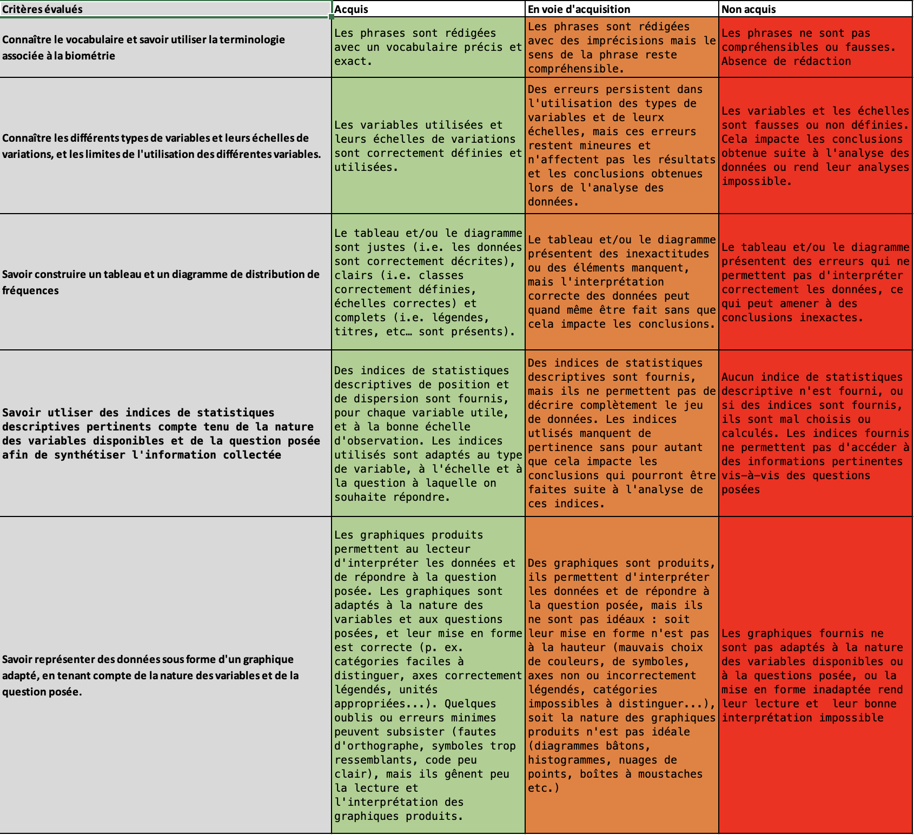

Introduction
Objectifs
Ce livre contient l’ensemble du matériel (contenus, exemples, exercices…) nécessaire à la réalisation des travaux pratiques de Biométrie de l’EC ‘Outils pour l’étude et la compréhension du vivant 2’ du semestre 3 de la licence Sciences de la Vie de La Rochelle Université.
Les 4 grands chapitres de ce livre correspondent aux 3 objectifs principaux de ces séances de TP et TEA :
Vous faire découvrir les logiciels R et Rstudio (chapitres 1 R et RStudio : les bases et 2 Explorez votre premier jeu de données) dans lesquels vous allez passer beaucoup de temps en licence puis en master. Si vous choisissez une spécialité de master qui implique de traiter des données (c’est-à-dire à peu près toutes les spécialités des Sciences de la Vie !) et/ou de communiquer des résultats d’analyses statistiques, alors
RetRStudiodevraient être les logiciels vers lesquels vous vous tournerez naturellement.Vous apprendre à faire des graphiques de qualités dans
RStudioet vous faire prendre conscience de l’importance des visualisations graphiques (chapitre 3 Visualiser des données avec ggplot2 : attention, ce chapitre est très long, ne vous laissez pas surprendre !) :
- d’une part, pour explorer des données inconnues et vous faire une première idée des informations qu’elles contiennent,
- d’autre part, pour vous permettre de formuler des hypothèses pertinentes et intéressantes concernant les systèmes que vous étudiez,
- et enfin, pour communiquer efficacement vos trouvailles à un public qui ne connaît pas vos données aussi bien que vous (cela inclut évidemment vos enseignants à l’issue de vos stages).
- Vous apprendre à manipuler efficacement des tableaux de données de grande taille (chapitre 4 Manipuler des tableaux avec dplyr). Cela signifie que vous devriez être en mesure de sélectionner des variables (colonnes) d’un tableau, d’en créer de nouvelles en modifiant et/ou combinant des variables existantes, de filtrer des lignes spécifiques, etc.
À l’issue de ces TP et TEA, vous devriez donc être suffisamment à l’aise avec le logiciel RStudio pour y importer des données issues de tableurs, les manipuler pour les mettre dans un format permettant les représentations graphiques, et pour produire des graphiques pertinents, adaptés aux données dont vous disposez, et d’une qualité vous permettant de les intégrer sans honte à vos compte-rendus de TP et rapports de stages.
D’ailleurs, les données que vous serez amenés à traiter lors de vos stages, ou plus tard, lorsque vous serez en poste, ont souvent été acquises à grands frais, et au prix d’efforts importants. Il est donc de votre responsabilité d’en tirer le maximum. Et ça commence toujours (ou presque), par la manipulation de données dans RStudio et la réalisation de visualisations graphiques parlantes.
À partir de maintenant, tous les compte-rendus de TP que vous aurez à produire dans le cadre de la licence SV devront respecter les bonnes pratiques décrites dans ce document. En particulier, et sauf consigne contraire, les collègues de l’équipe pédagogique attendent que les graphiques que vous intégrerez à vos compte-rendus de TP soient systématiquement produits dans RStudio.
Organisation
Volume de travail
Les travaux pratiques et TEA de biométrie auront lieu entre le 9 septembre et le 11 octobre 2024. Chaque groupe aura 4 séances de TP de 90 minutes et 3 séances de TEA de 90 minutes selon le calendrier suivant :
Groupe 1
- 17 sept, 13:15 - 14:45, MSI217
- 23 sept, 18:30 - 20:00, MSI217
- 3 oct, 09:45 - 11:15, PCM-INFO TRANS2
- 8 oct, 09:45 - 11:15, PCM-SC5
Groupe 2
- 17 sept, 18:30 - 20:00, MSI217
- 23 sept, 16:45 - 18:15, MSI217
- 30 sept, 18:30 - 20:00, MSI217
- 8 oct, 08:00 - 09:30, PCM-SC5
Groupe 3
- 9 sept, 18:30 - 20:00, MSI217
- 18 sept, 18:30 - 20:00, MSI217
- 2 oct, 18:30 - 20:00, MSI217
- 7 oct, 08:00 - 09:30, PCM-SC6
Groupe 4
- 9 sept, 16:45 - 18:15, MSI217
- 17 sept, 09:45 - 11:15, MSI217
- 1 oct, 18:30 - 20:00, MSI217
- 8 oct, 16:45 - 18:15, MSI217
Groupe 5
- 17 sept, 16:45 - 18:15, MSI217
- 24 sept, 18:30 - 20:00, MSI217
- 3 oct, 11:30 - 13:00, PCM-INFO TRANS2
- 9 oct, 15:00 - 16:30, PCM-INFO TRANS2
Groupe 6
- 18 sept, 16:45 - 18:15, MSI217
- 24 sept, 16:45 - 18:15, MSI217
- 30 sept, 09:45 - 11:15, MSI217
- 11 oct, 08:00 - 09:30, MSI217
Groupe 7
- 16 sept, 16:45 - 18:15, MSI217
- 25 sept, 18:30 - 20:00, MSI217
- 1 oct, 16:45 - 18:15, MSI217
- 7 oct, 09:45 - 11:15, PCM-SC6
Groupe 8
- 10 sept, 16:45 - 18:15, MSI217
- 25 sept, 16:45 - 18:15, MSI217
- 30 sept, 16:45 - 18:15, MSI217
- 7 oct, 16:45 - 18:15, MSI217
Les TEA, ont tous lieu en distanciel synchrone, pour toute la promotion à la fois :
- 21 sept, 09:45 - 11:15
- 5 oct, 09:45 - 11:15
- 7 oct, 18:30 - 20:00
Au total, chaque groupe aura donc 10h30 de TP et TEA. C’est très peu pour atteindre les objectifs fixés et il y aura donc évidemment du travail personnel à fournir en dehors de ces séances. Pour chaque TP ou TEA prévu à l’emploi du temps, j’estime qu’une à deux heures de travail personnel est nécessaire (soit 10 à 20 heures de travail personnel selon votre degré d’aisance, en plus des 10h30 prévues à votre emploi du temps au total). Attention donc : pensez bien à prévoir du temps dans vos plannings en dehors des heurs prévues dans vos EDT car le travail personnel est essentiel pour progresser dans cette matière. J’insiste sur l’importance de faire l’effort dès maintenant : vous allez en effet avoir des enseignements qui reposent sur l’utilisation de ces logiciels à chaque semestre de la licence, du S3 au S6. C’est maintenant qu’il faut acquérir des automatismes.
J’insiste sur l’importance de travailler cette matière régulièrement. Vous devez vous y mettre dès maintenant et y consacrer quelques heures chaque semaine. Interrogez vos collègues de L3 qui ont eu cet enseignement l’an dernier : il y a beaucoup de temps à y passer et il est hélas facile de prendre et d’accumuler du retard…
Modalités d’enseignement
Pour suivre cet enseignement vous pourrez utiliser les ordinateurs de l’université, mais je ne peux que vous encourager à utiliser vos propres ordinateurs, sous Windows, Linux ou MacOS. Lors de vos futurs stages et pour rédiger vos comptes-rendus de TP, vous utiliserez le plus souvent vos propres ordinateurs, autant prendre dès maintenant de bonnes habitudes en installant les logiciels dont vous aurez besoin tout au long de votre licence. Si vous ne possédez pas d’ordinateur, manifestez vous rapidement auprès de moi car des solutions existent (prêt par l’université, travail sur tablette via Posit cloud…).
L’essentiel du contenu de cet enseignement peut être abordé en autonomie, à distance, grâce à ce livre en ligne, aux ressources mises à disposition sur Moodle et à votre ordinateur personnel. Cela signifie que la présence physique lors de ces séances de TP n’est pas obligatoire.
Plus que des séances de TP classiques, considérez plutôt qu’il s’agit de permanences non-obligatoires : si vous pensez avoir besoin d’aide, si vous avez des points de blocage ou des questions sur le contenu de ce document ou sur les exercices demandés, alors venez poser vos questions lors des séances de TP. Vous ne serez d’ailleurs pas tenus de rester pendant 1h30 : si vous obtenez une réponse en 10 minutes et que vous préférez travailler ailleurs, vous serez libres de repartir !
De même, si vous n’avez pas de difficulté de compréhension et que vous n’avez pas de problème avec les exercices de ce livre en ligne, votre présence n’est pas requise. Si vous souhaitez malgré tout venir en salle de TP, pas de problème, vous y serez toujours les bienvenus. D’ailleurs, vous pouvez aussi venir aux séances de permanences des autres groupes de TP (à supposer que vous soyez disponibles) si vous avez une question pressante ou si vous estimez que vous commencez à prendre du retard.
Attention, c’est bien la présence en salle de TP qui n’est pas obligatoire. Faire le travail demandé dans le temps imparti reste bel et bien obligatoire ! Que vous fassiez le choix de venir ou non aux séances de TP, vous devez obligatoirement travailler cette matière lors des créneaux de TP et de TEA prévus dans votre emploi du temps ! Si vous considérez que ça n’est pas important puisque votre présence en salle de TP n’est pas requise, ou que vous avez plus urgent à faire dans l’immédiat, la chute sera brutale et le réveil douloureux…
Ce fonctionnement très souple a de nombreux avantages :
- vous disposez de plus de liberté et d’autonomie et vous avancez à votre rythme
- vous ne venez que lorsque vous en avez vraiment besoin
- celles et ceux qui se déplacent reçoivent une aide personnalisée “sur mesure”
- celles et ceux qui ne se déplacent pas reçoivent une aide à distance (voir plus bas)
- vous travaillez sur vos ordinateurs
- les effectifs étant réduits en salle, les conditions de travail sont idéales
Toutefois, pour que cette organisation fonctionne, cela demande de la rigueur de votre part, en particulier sur la régularité du travail que vous devez fournir. J’insiste sur le fait que si la présence en salle de TP n’est pas requise, le travail demandé est bel et bien obligatoire ! Si vous venez en salle de TP sans avoir travaillé en amont, sans avoir expérimenté et sans avoir de question à poser, ces séances ne seront pas plus utiles qu’un TP classique où vous passerez votre séance à lire ce livre en ligne. Vous perdrez donc en partie votre temps. De même, si vous attendez la 4e séance pour vous y mettre sérieusement, vous irez droit dans le mur. Je le répète, outre les 10h30 de TP/TEA prévus dans vos emplois du temps, vous devez prévoir entre 10 et 20 heures de travail personnel supplémentaire.
Je vous laisse donc une grande liberté d’organisation. À vous d’en tirer le maximum et de faire preuve de la maturité et du sérieux nécessaires. Le rythme auquel vous devriez avancer est présenté séance par séance, dans la section intitulée “Progression conseillée” un peu plus bas.
Utilisation de Slack
Outre les séances de permanences non-obligatoires, nous échangerons aussi sur l’application Slack, qui fonctionne un peu comme un chat privé. Slack facilite la communication des équipes et permet de travailler ensemble. Créez-vous un compte en ligne et installez le logiciel sur votre ordinateur dès maintenant (il existe aussi des versions pour tablettes et smartphones). Lorsque vous aurez installé le logiciel, revenez ici et cliquez sur ce lien pour vous connecter à notre espace de travail commun intitulé L2 SV 24-25 / EC outils (ce lien expire au bout d’un mois, donc suivez-le dès aujourd’hui et faites moi signe s’il n’est plus valide).
Vous verrez que 2 “chaînes” sont disponibles :
#général: c’est là que les questions liées à l’organisation générale du cours, des TP, des TEA et des évaluations doivent être posées. C’est également ici que je posterai les annonces importantes concernant l’organisation des séances et de l’évaluation.#questions-rstudio: c’est ici que toutes les questions pratiques liées à l’utilisation deRetRStudiodevront êtres posées. Problèmes de syntaxe, problèmes liés à l’interface, à l’installation des packages ou à l’utilisation des fonctions, à la création des graphiques, à la manipulation des tableaux… Tout ce qui concerne directement les logiciels sera traité ici. Vous êtes libres de poser des questions, de poster des captures d’écran, des morceaux de code, des messages d’erreur. Et vous êtes bien entendus vivement encouragés à vous entraider et à répondre aux questions de vos collègues. Je n’interviendrai ici que pour répondre aux questions laissées sans réponse ou si les réponses apportées sont inexactes. Le fonctionnement est celui d’un forum de discussion instantané. Vous en tirerez le plus grand bénéfice en participant et en n’ayant pas peur de poser des questions, même si elles vous paraissent idiotes. Rappelez-vous toujours que si vous vous posez une question, d’autres se la posent aussi probablement.
Ainsi, quand vous travaillerez à vos TP ou TEA, que vous soyez installés chez vous ou en salle de TP, prenez l’habitude de garder Slack ouvert sur votre ordinateur. Même si vous n’avez pas de question à poser, votre participation active pour répondre à vos collègues est souhaitable et souhaitée. Je vous incite donc fortement à vous entraider : c’est très formateur pour celui qui explique, et celui qui rencontre une difficulté a plus de chances de comprendre si c’est quelqu’un d’autre qui lui explique plutôt que la personne qui a rédigé les instructions mal comprises.
Ce document est fait pour vous permettre d’avancer en autonomie et vous ne devriez normalement pas avoir beaucoup besoin de moi si votre lecture est attentive. L’expérience montre en effet que la plupart du temps, il suffit de lire correctement les paragraphes précédents et/ou suivants pour obtenir la réponse à ses questions. J’essaie néanmoins de rester disponible sur Slack pendant les séances de TP et de TEA de tous les groupes. Cela veut donc dire que même si votre groupe n’est pas en TP, vos questions ont des chances d’être lues et de recevoir des réponses dès que d’autres groupes sont en TP ou TEA. Vous êtes d’ailleurs encouragés à échanger sur Slack aussi pendant vos phases de travail personnels.
Progression conseillée
Pour apprendre à utiliser un logiciel comme R, il faut faire les choses soi-même, ne pas avoir peur des messages d’erreurs (il faut d’ailleurs apprendre à les déchiffrer pour comprendre d’où viennent les problèmes), essayer maintes fois, se tromper beaucoup, recommencer, et surtout, ne pas se décourager. J’utilise ce logiciel presque quotidiennement depuis plus de 15 ans et à chaque session de travail, je rencontre des messages d’erreur. Avec suffisamment d’habitude, on apprend à les déchiffrer, et on corrige les problèmes en quelques secondes. Ce livre est conçu pour vous faciliter la tâche, mais ne vous y trompez pas, vous rencontrerez des difficultés, et c’est normal. C’est le prix à payer pour profiter de la puissance du meilleur logiciel permettant d’analyser des données, de produire des graphiques de qualité et de réaliser toutes les statistiques dont vous aurez besoin d’ici la fin de vos études et au-delà.
Pour que cet apprentissage soit le moins problématique possible, il convient de prendre les choses dans l’ordre. C’est la raison pour laquelle les chapitres de ce livre doivent être lus dans l’ordre, et les exercices d’application faits au fur et à mesure de la lecture.
Idéalement, voilà les étapes que vous devriez avoir franchies chaque semaine :
La première séance est consacrée à l’installation des logiciels, à la découverte de l’environnement de travail, des
RProjects, des packages et des scripts. Avant votre deuxième séance, vous devrez avoir terminé le premier chapitre de ce livre, vous devrez être capables de créer unRprojectet un script, de télécharger et d’installer des packages, et d’exécuter des commandes simples dans votre script. Vous devrez aussi avoir suivi les tutoriels deDataCampet connaitre les types d’objets suivants : vecteurs, facteurs, data.frames (et tibbles). Vous devrez effectuer le premier quizz Moodle (attention, ce quizz est à faire seul !).La deuxième séance est consacrée à la découverte des premiers jeux de données et du package
ggplot2. Avant votre troisième séance, vous devrez avoir terminé la section 3.6.2 Éviter à tout prix les diagrammes circulaires, vous devrez avoir compris comment charger en mémoire les jeux de données disponibles dans un packages, vous devrez connaitre la syntaxe de base permettant de faire toutes sortes de graphiques avecggplot2avec une unique variable numérique ou catégorielle. À terme, vous devrez être capables de choisir des graphiques appropriés selon le nombre et la nature des variables dont vous disposez. À ce stade, on ne demande rien de complexe, mais vous devrez, à minima, être capable de faire des barplots et des histogrammes et vous devriez être capable de les distinguer. Vous devrez effectuer le second quizz Moodle (attention, ce quizz est à faire seul !).La troisième séance est consacrée à la découverte de graphiques permettant de visualiser les relations entre plusieurs variables : 2, 3 ou plus. Vous verrez également comment améliorer la qualité de vos graphiques en vue de leur intégration dans un compte-rendu, un rapport ou une présentation. Avant votre dernière séance de TP, vous devrez avoir terminé le chapitre 3 Visualiser des données avec ggplot2, vous devrez donc être capable de faire, outre les graphiques de la semaine précédente, des nuages de points, des stripcharts, des graphiques en lignes et des boxplots. Vous devrez également être capable de faire des sous-graphiques par catégories (
facet()), de choisir un thème et des palettes de couleurs appropriées, et de légender/annoter correctement vos graphiques. Attention, ce chapitre est long ! Vous devrez enfin effectuer le troisième quizz Moodle (attention, ce quizz est à faire seul !).La quatrième et dernière séance est consacrée à la manipulation des tableaux de données. À l’issue de cette séance, vous devrez être capable de sélectionner des colonnes dans un tableau, de filtrer des lignes, et de créer de nouvelles variables. Vous devrez être capables d’enchaîner correctement les étapes suivantes : ouvrir le logiciel > créer un
Rproject> créer un script > mettre en mémoire les packages utiles > importer des données > mettre en forme ces données > faire un ou des graphiques informatifs et correctement mis en forme. Vous devrez effectuer le quatrième et dernier quizz Moodle (attention, ce quizz est à faire seul !).
Relisez régulièrement cette section (chaque semaine !) pour savoir si les objectifs fixés ici sont atteints et vous assurez que vous ne prenez pas de retard…
Évaluation(s)
L’évaluation de la biométrie du semestre 3 sera assurée par Benoît Lebreton. Vous êtes susceptibles d’être interrogés sur tout ce qui est décrit dans ce livre en ligne.
Les exercices de ce livre en ligne ne seront ni ramassés, ni notés : ils sont proposés pour que vous puissiez mettre en application les notions récemment apprises et afin d’évaluer votre propre progression et vos apprentissages. Ils doivent vous aider à mettre le doigt sur les choses que vous n’avez pas comprises afin que vous puissiez me poser des questions sur Slack ou lors des séances de permanences. Tout ce que nous voyons en TP et TEA devra être acquis à la fin des TP. Les TP de biométrie du semestre 4 (et des 2 semestres de L3) supposent en effet que les notions abordées ici soient parfaitement acquises. En particulier, les étapes décrites précédemment doivent être maîtrisées (ouvrir le logiciel > créer un projet > créer un script > mettre en mémoire les packages utiles > importer des données > mettre en forme ces données > faire un ou des graphiques informatifs et correctement mis en forme).
La grille critériée suivante sera utilisée pour l’évaluation :

Licence
Ce livre est ligne est sous licence Creative Commons (CC BY-NC-ND 4.0)

Vous êtes autorisé à partager, copier, distribuer et communiquer ce matériel par tous moyens et sous tous formats, tant que les conditions suivantes sont respectées :
- Attribution : vous devez créditer ce travail (donc citer son auteur), fournir un lien vers ce livre en ligne, intégrer un lien vers la licence Creative Commons et indiquer si des modifications du contenu original ont été effectuées. Vous devez indiquer ces informations par tous les moyens raisonnables, sans toutefois suggérer que l’auteur vous soutient ou soutient la façon dont vous avez utilisé son travail.
- Pas d’Utilisation Commerciale : vous n’êtes pas autorisé à faire un usage commercial de cet ouvrage, ni de tout ou partie du matériel le composant. Cela comprend évidemment la diffusion sur des plateformes de partage telles que studocu.com qui tirent profit d’œuvres dont elles ne sont pas propriétaires, souvent à l’insu des auteurs.
- Pas de modifications : dans le cas où vous effectuez un remix, que vous transformez, ou créez à partir du matériel composant l’ouvrage original, vous n’êtes pas autorisé à distribuer ou mettre à disposition l’ouvrage modifié.
- Pas de restrictions complémentaires : vous n’êtes pas autorisé à appliquer des conditions légales ou des mesures techniques qui restreindraient légalement autrui à utiliser cet ouvrage dans les conditions décrites par la licence.